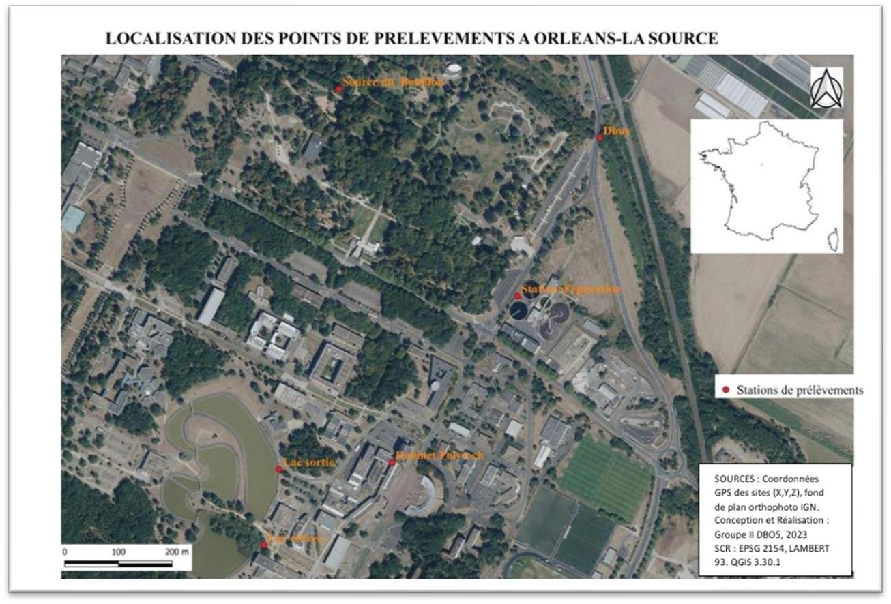

Géomatique, Limnologie, Environnement et Territoires · Université d'Orléans
Évaluation de la qualité des eaux du quartier de La Source
Analyse physico-chimique et biologique de six points de prélèvement (Orléans)
Contexte et objectif
La qualité de l'eau conditionne la santé publique, la biodiversité et les usages (consommation, irrigation, industrie), mais elle reste menacée par les rejets industriels, la pollution agricole et les eaux usées mal traitées. Ce travail analyse la composition physico-chimique et biologique des eaux du quartier de La Source à Orléans, un secteur karstique riche en milieux naturels et anthropisés, afin d'évaluer leur état, de détecter d'éventuelles pollutions et de formuler des recommandations de gestion.
Démarche et outils
Six points de prélèvement ont été sélectionnés et localisés sous SIG : le robinet de Polytech (eau potable), la Source du Bouillon (résurgence karstique du Loiret), le Dhuy (rivière), la station d'épuration de Saint-Cyr-en-Val, ainsi que l'entrée et la sortie du lac du campus universitaire. Sur le terrain, température, pH, oxygène dissous, conductivité et turbidité ont été mesurés, complétés en laboratoire par des analyses de matières en suspension, alcalinité, chromatographie ionique, DBO5, DCO, carbone organique et azote/phosphore dissous. Les résultats ont ensuite été comparés aux seuils de la Directive Cadre sur l'Eau et de la LEMA, pour les eaux superficielles, les rejets d'assainissement et l'eau destinée à la consommation humaine, ainsi qu'à des séries historiques (2018-2024) pour suivre leur évolution temporelle.
Résultats
L'eau du robinet et les rejets de la station d'épuration présentent des indicateurs stables et globalement conformes aux normes, à l'exception d'une non-conformité en azote global dissous à la station d'épuration (27,21 mg/L pour un seuil de 10 mg/L). Les eaux de surface (Dhuy, Bouillon, lacs du campus) montrent une qualité plus contrastée : bonne oxygénation générale, mais des sursaturations en oxygène dissous (jusqu'à 109,8 % au Lac Sortie) et une pollution azotée notable au Dhuy, révélatrices d'apports anthropiques et d'un risque d'eutrophisation à surveiller.
